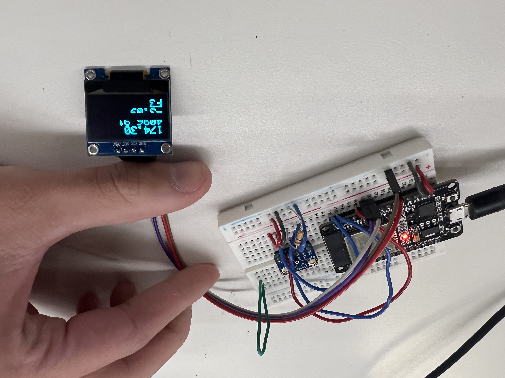
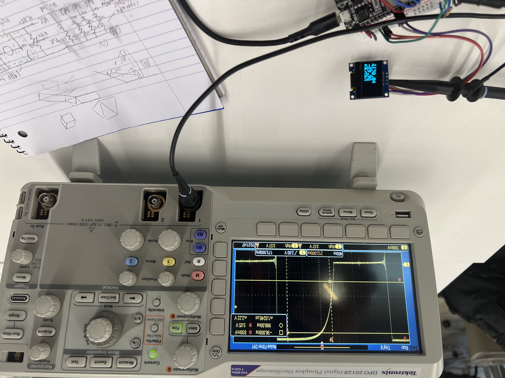

<div class="textcontainer">
<p class="margin"> </p>
<h3>Day 7: Electronic Outputs</h3>
<br>
<a href="tuner_src.zip">source code download</a><br>
<br>
<h4>Assignment: Minimum Viable Product for Final Project</h4>
<p></p>
For my final project of a live tuner, I had to produce just a pitch detector for the Minimum viable product.
After the pain of getting the mic last time, all I had to do now was to analyze the samples for a pitch and output those to a screen.<br>
<br>
The pitch analysis ended up being far more annoying than I anticipated, mostly because of overtones / harmonics, additional frequencies
present in a sound other than the fundamental frequency (the pitch I'm looking for). If one of these overtones is too strong,
it can end up hiding the fundamental frequency, resulting in me detecting the wrong pitch. As such, I experimented with four
different pitch detection methods: a basic Fourier Transform by itself, a Cepstrum, Harmonic spectrum Product, and YIN*. In the end,
of those 4, YIN was the most accurate but far too slow. After YIN, a basic Fourier Transform was the best and more than fast enough.
I may want to experiment a bit more with non-frequency spectrum based methods since YIN showed so much promise and I may want to smooth
out readings to help stabilize them and prevent them from jumping between harmonics.<br>
<br>
The screen on the other hand was fairly painless other than struggling to get it to display because of having to "begin" the screen
during the setup function because apparantly doing it in a class constructed before the setup function doesn't work. As part of the
assignment, I also measured how the Esp32 was communicating with it. On the SCL pin (clock), it simply repeated High and Low in roughly equal proportions
with a total period of about 2600 ns for about 385 khz. The SDA pin (data) was usually low with occasional pulses of high which were sometimes chained
together. Each high pulse was also about 2600 ns so again about 385 khz. <br>
<p></p><br>
<br>
*<div class="indent">the specific YIN algorithm implementation was copied under the GNU General Public License version 2,
only being lightly modified where indicated, it is included in the source download alongside the license.</div><br>
my code:
<pre><div class="code_background"><code>#include <ESP_I2S.h>
#include <SPI.h>
#include <Wire.h>
#include <Adafruit_GFX.h>
#include <Adafruit_SSD1306.h>
#include <string>
#include <arduinoFFT.h>
#include <yinacf.h>
#define I2C_SDA 18
#define I2C_SCL 19
#define SCREEN_WIDTH 128 // OLED display width, in pixels
#define SCREEN_HEIGHT 64 // OLED display height, in pixels
// Declaration for an SSD1306 display connected to I2C (SDA, SCL pins)
// The pins for I2C are defined by the Wire-library.
// On an arduino UNO: A4(SDA), A5(SCL)
// On an arduino MEGA 2560: 20(SDA), 21(SCL)
// On an arduino LEONARDO: 2(SDA), 3(SCL), ...
#define OLED_RESET -1 // Reset pin # (or -1 if sharing Arduino reset pin)
#define SCREEN_ADDRESS 0x3C ///< See datasheet for Address; 0x3D for 128x64, 0x3C for 128x32
#define BCLK 23 // aka SCK
#define LRCL 22 // aka WS
#define DOUT -1 // aka SDOUT, unused
#define DIN 21 // aka SDIN
#define MCLK -1 // unused
#define buffer_size 1024 //for the mic
#define sampling_rate 44100 //of the mic
double sqr(double x) {
return x * x;
}
class TunerScreen {
TwoWire I2C_screen = TwoWire(0);
Adafruit_SSD1306 display = Adafruit_SSD1306(SCREEN_WIDTH, SCREEN_HEIGHT, &I2C_screen, OLED_RESET);
public:
TunerScreen() {}
void begin() {
I2C_screen.begin(I2C_SDA, I2C_SCL, 100000);
// SSD1306_SWITCHCAPVCC = generate display voltage from 3.3V internally
if(!display.begin(SSD1306_SWITCHCAPVCC, SCREEN_ADDRESS)) {
for(;;); // Don't proceed, loop forever
}
display.display();
delay(2000);
reset();
}
void reset() {
display.clearDisplay();
display.cp437(true); // Use full 256 char 'Code Page 437' font
print_settings(0, 0, 1, SSD1306_WHITE);
}
void print_settings(int16_t x, int16_t y, uint8_t size, uint16_t color) {
display.setCursor(x, y);
display.setTextSize(size);
display.setTextColor(color);
}
void print(const __FlashStringHelper * ifsh) {
display.print(ifsh);
}
void print(String str) {
display.print(str);
}
void print(char* str) {
display.print(str);
}
void print(double str) {
display.print(str);
}
void flush() {
display.display();
}
};
class TunerMic {
I2SClass mic_i2s;
int32_t buffer[buffer_size];
size_t buffer_idx = 0;
double vReal[buffer_size];
double vImag[buffer_size];
ArduinoFFT<double> fft = ArduinoFFT<double>(vReal, vImag, buffer_size, sampling_rate);
YinACF<double> yin;
size_t num_fresh_samples = 0;
public:
TunerMic() {
mic_i2s.setPins(23, 22, -1, 21, -1); //SCK, WS, SDOUT, SDIN, MCLK
mic_i2s.begin(I2S_MODE_STD, sampling_rate, I2S_DATA_BIT_WIDTH_32BIT, I2S_SLOT_MODE_MONO);
yin.build(512, 8); //note: uses O(n * m) local memory so beware
}
void read() {
size_t read_amount = (size_t) mic_i2s.available();
if (buffer_idx + read_amount / 4 > buffer_size) {
size_t read1_size = 4 * (buffer_size - buffer_idx);
size_t read2_size = read_amount - read1_size;
mic_i2s.readBytes((char*) &buffer[buffer_idx], read1_size);
mic_i2s.readBytes((char*) &buffer[0], read2_size);
buffer_idx = read2_size / 4;
} else {
mic_i2s.readBytes((char*) &buffer[buffer_idx], read_amount);
buffer_idx += read_amount / 4;
}
num_fresh_samples += read_amount / 4;
}
int64_t get_volume() {
int64_t mean = 0;
for (int i = 0; i < buffer_size; i++) {
int64_t sample = buffer[i];
mean += sample;
}
mean /= buffer_size;
int64_t deviation = 0;
for (int i = 0; i < buffer_size; i++) {
int64_t sample = buffer[i];
deviation += abs(mean - sample);
}
return deviation / buffer_size;
}
void load_fft() {
size_t temp_buffer_idx = buffer_idx % buffer_size;
for (size_t i = 0; i < buffer_size; i++) {
vReal[i] = (double) buffer[temp_buffer_idx];
vImag[i] = 0.0;
temp_buffer_idx++;
temp_buffer_idx %= buffer_size;
}
fft.dcRemoval();
//fft.windowing(FFT_WIN_TYP_HAMMING, FFT_FORWARD);
}
double fft_pitch() {
load_fft();
fft.compute(FFT_FORWARD);
fft.complexToMagnitude();
return fft.majorPeak();
}
//calculating the cepstrum, works with some sounds with many harmonics but not really voice, too unstable
//note: also set fft's sample rate to 2.0 / sampling_rate
double cepstrum_pitch() {
load_fft();
fft.compute(FFT_FORWARD);
for (int i = 0; i < buffer_size; i++) {
vReal[i] = (double) log(abs(vReal[i]) + std::numeric_limits<double>::min());
vImag[i] = 0.0;
}
fft.compute(FFT_REVERSE);
fft.complexToMagnitude();
return 1.0 / (fft.majorPeak() * (double) buffer_size);
}
// harmonic product spectrum, too unstable, still has overtone issues
double hps_pitch() {
const int num_frames = 4;
const size_t frame_size = buffer_size / num_frames;
double frames[buffer_size];
size_t dst_idx = 0;
for (int i = 1; i <= num_frames; i++) {
size_t src_idx = 0;
double val = 0.0;
for (int j = 0; j < i; j++) {
val += vReal[src_idx++];
}
frames[dst_idx++] = val / i;
}
for (size_t i = 0; i < frame_size; i++) {
for (size_t j = 1; j < num_frames; j++) {
vReal[i] *= vReal[i + frame_size * j];
}
}
size_t max_idx = 0;
double max_amplitude = 0;
for (size_t i = 0; i < frame_size; i++) {
if (vReal[i] > max_amplitude) {
max_amplitude = vReal[i];
max_idx = i;
}
}
return ((double) max_idx * (double) sampling_rate) / buffer_size;
}
// yin pitch detection algorithm, so far, most accurate but also slowest (and most memory I think)
// however, each individual tick (for each sample) returns a value, so if the rest is adapted for that,
// it could be fast enough to not be an issue
double yin_pitch() {
size_t temp_buffer_idx = buffer_idx % buffer_size;
for (size_t i = 1; i < buffer_size; i++) {
yin.tick(buffer[temp_buffer_idx]);
temp_buffer_idx++;
temp_buffer_idx %= buffer_size;
}
return (double) sampling_rate * (double) yin.tick(buffer[temp_buffer_idx]);
}
double get_pitch() {
return fft_pitch();
}
bool tick(double* out) {
if (num_fresh_samples < buffer_size) {
read();
return false;
} else {
*out = get_pitch();
num_fresh_samples = 0;
return true;
}
}
};
double freq_to_cents(double freq) { //from C_0
return (log2(freq) - log2(440.0)) * 1200.0 + 5700.0; //440hz = A_4
}
String cents_to_spn(double cents) { // rounds to closest spn
int int_cents = (int) cents + 50; // makes rounding to middle equivilent to rounding down, convienient for octaves
int octave = int_cents / 1200;
String out = "";
int_cents %= 1200;
if (int_cents < 100) out+="C";
else if (int_cents < 200) out+="C#/Db";
else if (int_cents < 300) out+="D";
else if (int_cents < 400) out+="D#/Eb";
else if (int_cents < 500) out+="E";
else if (int_cents < 600) out+="F";
else if (int_cents < 700) out+="F#/Gb";
else if (int_cents < 800) out+="G";
else if (int_cents < 900) out+="G#/Ab";
else if (int_cents < 1000) out+="A";
else if (int_cents < 1100) out+="A#/Bb";
else if (int_cents < 1200) out+="B";
out += octave;
return out;
}
TunerScreen screen = TunerScreen();
TunerMic mic = TunerMic();
void setup() {
Serial.begin(115200);
screen.begin();
// put your setup code here, to run once:
screen.reset();
screen.print_settings(0, 0, 1, SSD1306_WHITE);
screen.flush();
}
void loop() {
// put your main code here, to run repeatedly:
double freq;
if (mic.tick(&freq)) {
screen.reset();
screen.print_settings(0, 0, 2, SSD1306_WHITE);
screen.print(freq);
Serial.println(freq);
double cents = freq_to_cents(freq);
screen.print_settings(0, 16, 2, SSD1306_WHITE);
screen.print(cents);
Serial.println(cents);
double cents_off = cents - 100.0 * floor((cents + 50.0) / 100.0);
screen.print_settings(0, 32, 2, SSD1306_WHITE);
screen.print(cents_off);
Serial.println(cents_off);
String spn = cents_to_spn(cents);
screen.print_settings(0, 48, 2, SSD1306_WHITE);
screen.print(spn);
Serial.println(spn);
screen.flush();
}
}
</code></div></pre>
</div>